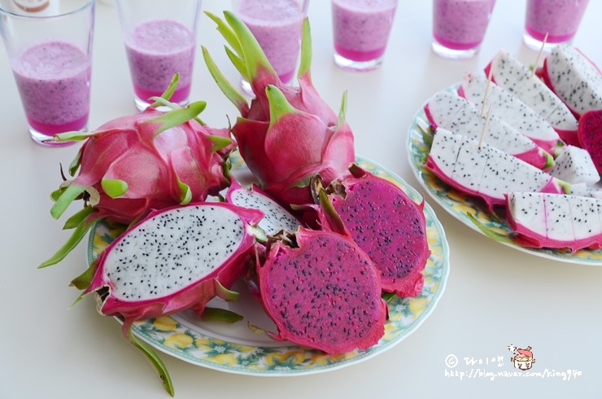

가지에 열매가 열린 모습이 마치 용이 여의주를 물고 있는 형상과 닮았다고 하여 붙여진 명칭이라고 한다. 영어로는 피타야(Pitaya)라고도 한다. 선인장 열매의 한 가지로, 원산지는 중앙아메리카이다. 베트남·타이완·중국·타이·일본 등 아시아의 따뜻한 지역에서도 경제작물로서 널리 재배되고 있으며, 우리나라 제주도에서도 특산품으로 재배된다.
용과가 자라는 묘목을 포트에서 50㎝ 정도의 크기로 키워 정식한 뒤 10개월쯤 지나면 줄기가 1m 이상으로 자라서 꽃을 피운다. 꽃의 길이는 약 45㎝인데, 하룻밤 동안 만개하였다가 다음 날에 진다. 열매는 타원형으로, 꽃잎이 진 뒤 30~40일이 지나면 수확할 수 있다. 과육 100g당 칼륨 함량이 272㎎으로 사과나 배보다 월등한 것을 비롯하여, 인·마그네슘·칼슘·철·아연·나트륨·카로틴·수용성 식이섬유·탄수화물·단백질·지질·비타민C·비타민B1·비타민B2·비타민B3 등 인체에 유익한 미네랄 성분과 항산화 물질을 풍부하게 함유하고 있다. 당도는 16~18 Brix(당도를 나타내는 단위)로, 사과(8~16 Brix)와 복숭아(7~15 Brix), 밀감(7~16 Brix)보다 높다.
품종은 백육종과 적육종, 황색종이 있다. 백육종은 과피는 붉은색이지만 과육은 흰 품종이고, 적육종은 과피와 과육이 모두 붉은 품종이다. 황색종은 과피가 노랗고 과육은 희다. 제주도에서는 백육종과 적육종만 재배되고 있다. 백육종은 여러 조각으로 잘라서 바나나처럼 껍질을 벗겨 먹을 수 있고, 적육종은 과일의 색소가 손에 묻으므로 숟가락으로 떠 먹는 것이 좋다. 물이나 우유, 요구르트, 꿀물 등을 섞어서 믹서기에 갈아 먹어도 좋다. 이밖에 화채나 젤리를 만드는 데 주재료로 사용되기도 한다. [네이버 지식백과] 용과 [Dragon fruit, 龍果] (두산백과)
